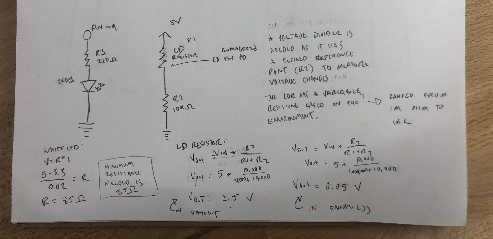
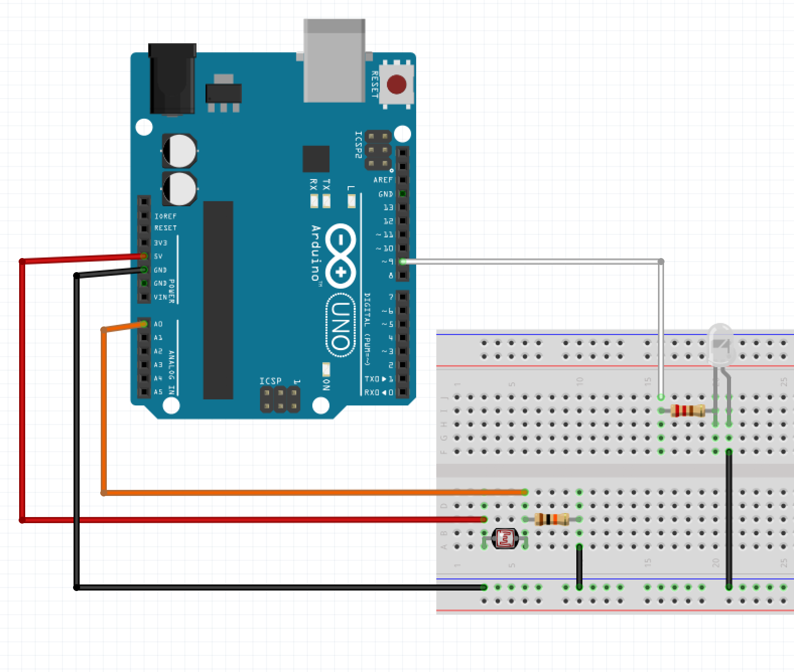

Monina's Assignment 3!
A 10k resistor is used for the LDR because a second resistor is needed as an LDR is a variable resistor. If there was no resistor, when the LDR has 0 resistance, 5V will flow directly to ground and damage the Arduino.

An image of the circuit

A gif of the circuits operation.

A gif of the serial monitor.
The code snippet
int analogInPin = A0; // declares AO pin as analogInPin
int sensorValue = 0; // declares 0 as the intial sensor value
int outputValue = 0; // declares 0 as the initial output calue
int led = 9; // declares pin 9 as the LED pin
void setup() {
// put your setup code here, to run once:
Serial.begin(9600); // starts serial monitor
pinMode(led, OUTPUT); // declares led as an output
}
void loop() {
// put your main code here, to run repeatedly:
sensorValue = analogRead(analogInPin); // stores the value read from the analogInPin
outputValue= map(sensorValue, 0, 1023, 255, 0); // takes the given sensorValue and transforms it to the scale of/255-0
if (outputValue > 100) { // if sensor is covered (100 chosen as an arbitrary value after testing the natural light of the room)
for (int i = 0; i < 256; i++) { // for every value of i that is less than 256
analogWrite(led, i); // assign the power of the LED to i
Serial.println("LED is currently ON"); // print that the LED is on
delay(2); // wait a moment
}
} else { // if the sensor is not covered
digitalWrite(led, LOW); // turn the LED 0ff
Serial.println("LED is currently OFF"); // print that the LED is off
delay(2); // wait a moment
}
}